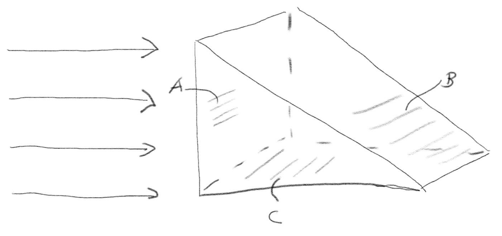
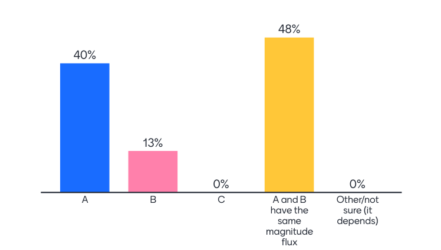
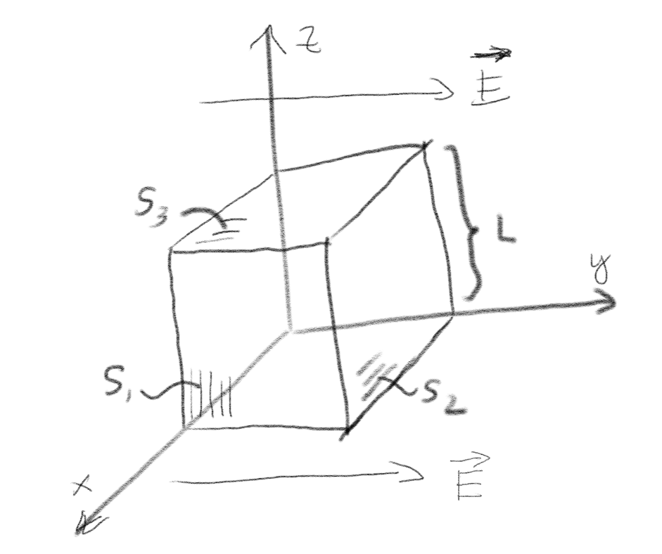
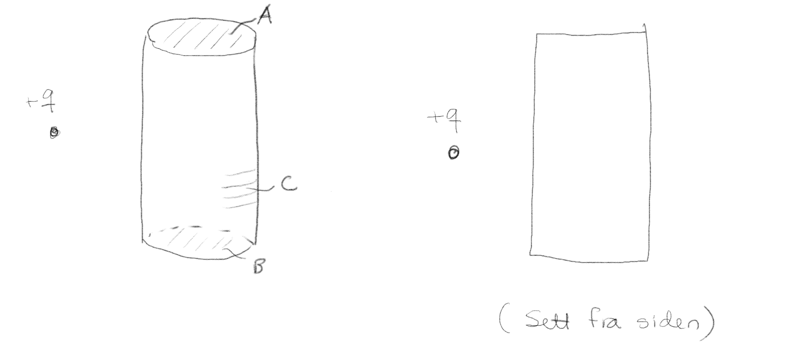
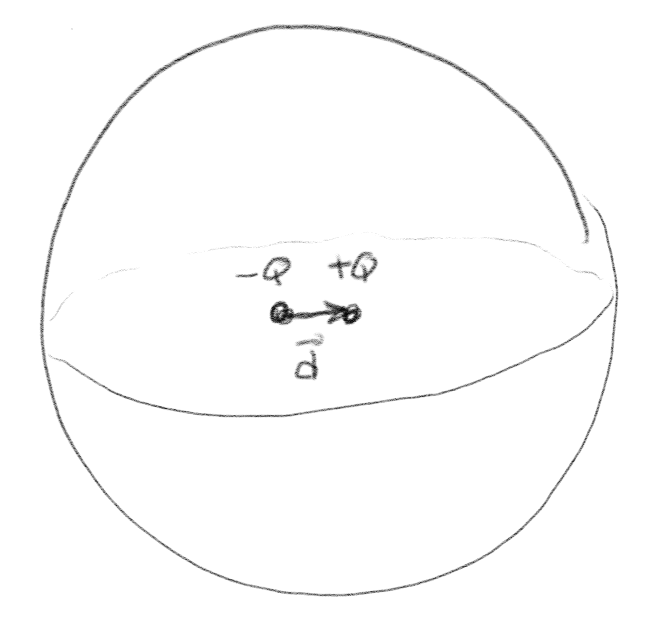

Gauss' lov
Gauss' lov på integralform og elektrisk fluks
(Lærebok 3.1.0-3.1.1)
Oppgave: Fluks trekant
Figuren viser et homogent (likt alle steder i rommet) og konstant (som ikke forandrer seg i tiden) elektrisk felt.

a) Hvilken side har størst fluks gjennom seg? A, B, C, eller A og B har samme.
Svarfordeling fra forelesning:

A og B har samme.
Fluksen er gitt som \( \phi = \vec{E} \cdot \vec{S} \). Både A og B har samme projeksjon inn på et plan normalt på \( \vec{E} \)-feltet. Fluksen er derfor den samme gjennom disse. Det er altså kun størrelsen av flatens normalt på feltet som bidrar til fluksen.
Oppgave: Fluks kube
Rommet i og rundt en kubisk boks med sidekanter \( L \) er fylt av et konstant, uniformt elektrisk felt \( \vec{E} = E_0 \y \).

a) Hva er den totale fluksen gjennom den lukkede flaten som kuben utgjør?
0
Siden det elektriske feltet er uniformt er fluksen $$ \begin{equation} \Phi = \int_S \vec{E} \cdot \d \vec{S} = \vec{E} \cdot \int_S \d \vec{S} = \vec{E} \cdot \vec{0} \tag{1} \end{equation} $$ Integralet over hele flaten (av en konstant skalar 1) er null fordi den en lukket. Bidraget fra side 1 blir kansellert av det like store, men motsatt rettede bidraget fra motsatt side, og slik er det for alle sidene.
b) Hva er fluksen gjennom hver av flatene \( S_1 \), \( S_2 \) og \( S_3 \)?
\( \Phi_1 = \Phi_3 = 0, \Phi_2 = E_0 L^2 \)
Vi finner fluksen fra $$ \begin{equation} \Phi_S = \int_S \vec{E}\cdot \d \vec{S} = \vec{E} \cdot \int_S \d \vec{S} = \vec{E} \cdot \vec{S} \; . \tag{2} \end{equation} $$ Her er \( \vec{E} = E_0 \y \), mens \( \vec{S}_1 = L^2 \x \), \( \vec{S}_2 = L^2 \y \) og \( \vec{S}_3 = L^2 \z \). Vi ser at \( \vec{E} \cdot \vec{S} \) er null for \( S_1 \) og \( S_3 \), mens den er \( E_0 L^2 \) for \( S_2 \).
Oppgave: Fluks sylinder
En positiv ladning \( +q \) er plassert utenfor en lukket sylinderflate som vist i figure. Den lukkede flaten består av to flate ender (\( A \) og \( B \)) og en sylinderformet sideflate (\( C \)).

a) Hva er fortegnet på fluksen av den elektriske feltet (fra ladningen) gjennom flate \( C \)?
Her må du bruke Gauss' lov sammen med kunnskapen om hvordan du regner ut fluksen.
Svarfordeling fra forelesninger i 2019:

Negativt
Fordi det ikke er noen ladning inne i sylinderen, vet vi at fluksen ut gjennom sylinderen vil være null. Det elektriske feltet vil stråle ut fra ladningen. Fluksen av det elektriske feltet gjennom \( A \) og \( B \) vil være positive, siden det elektriske feltet vil ha en komponent i samme retning som overflatenormalen, og den komponenten vil peke utover. (Du kan se det ved å tegne inn linjer ut fra \( q \) som representerer retningen til feltet.) Fordi fluksen ut gjennom \( A \) og \( B \) er positive og den totale fluksen er null, må fluksen ut gjennom \( C \) være negativ. Dette er et godt eksempel på en måte å tenke på i fysikk hvor vi bruker en summasjonsregel til å ressonere.
Oppgave: Fluks og ladning
En lukket overflate \( S \) som ikke er en kuleflate har en enkelt ladning \( q \) inni seg, men den er ikke i sentrum av overflaten. Det er flere ladningen utenfor overflaten.
a) Hva kan vi si om den totale elektriske fluksen \( \Phi = \int_S \vec{E} \cdot \d \vec{S} \) gjennom flaten?
- Den er \( q/\epsilon_0 \)
- Vi kan finne ut hva den er, men den er ikke \( q/\epsilon_0 \)
- Vi trenger mer informasjon for å bestemme dette
Den er \( q / \epsilon_0 \)
Gauss' lov gjelder for denne flaten. Det er kun ladningene inne i flaten som teller, og det er kun en ladning \( q \) innenfor flaten, de øvrige er utenfor flaten. Fluksen er derfor gitt av Gauss' lov.
Eksempel: Elektrisk felt fra en punktladning
(Lærebok 3.1.2)
Metode for å finne elektrisk felt med Gauss' lov
(Lærebok 3.1.2)
Oppgave: Dipol i en kule
En elektrisk dipol med ladninger \( Q \) og \( -Q \) en liten avstand \( \vec{d} \) fra hverandre ligger i sentrum av en kuleflate \( S \).

a) Hva kan vi si om fluksen \( \Phi \) av det elektriske feltet \( \vec{E} \) fra dipolen gjennom kuleflaten og om det elektriske feltet \( E = |\vec{E}| \) på kuleflaten?
- \( \Phi = 0 \) og \( E = 0 \) overalt på kuleflaten
- \( \Phi = 0 \) og \( E \) behøver ikke være null overalt på kuleflaten
- \( \Phi \) er ikke null, og \( E = 0 \) overalt på kulelflaten
- \( \Phi \) er ikke null, og \( E \) behøver ikke være null overalt på kuleflaten
\( \Phi = 0 \) og \( E \) behøver ikke være null overalt på kuleflaten
Gauss' lov forteller at fluksen er avhengig av netto ladningen innenfor flaten, og netto ladning er null, dermed er fluksen null. Men det betyr ikke at \( E \) må være null overalt, det er kun overflateintegralet, fluksen, som er null, det kan være positivt noen steder og negativt noen steder. Det er kun når vi vet at feltet er det samme overalt på overflaten pga symmetri at vi kan bruke Gauss' lov til å finne feltet på et enkelt vis.
Oppgave: Kuleskall
Et kuleskall har en positiv ladning uniformt fordelt utover overflaten. Det er ingen andre ladninger til stede.
a) Hva er det elektriske feltet inne i kulen?
\( 0 \)
Siden systemet har kulesymmetri kan vi anvende Gauss' lov på en kuleflate inne i kuleskallet med samme sentrum. På denne kuleflaten må feltet være uniformt og rettet i radiell retning, \( \vec{E} = E_r(r) \rhat \). Dermed vil Gauss' lov gi at: $$ \begin{equation} \int_S \vec{E} \cdot \d \vec{S} = E_r 4 \pi r^2 = 0 \quad \Rightarrow \quad E = 0 \tag{3} \end{equation} $$
b) Hvis vi plasserer en ladning \( q \) utenfor kuleskallet og beholder alle andre ladninger akkurat slik de var, hva er nå det elektriske feltet inne i kulen?
- 0 overalt inni
- Ikke null overalt inni
- Ikke mulig å avgjøre om det er null eller ikke
Ikke null overalt inni
Vi kan bruke superposisjonsprinsippet. Inne i kulen er bidraget fra kuleskallet null, mens bidraget fra den andre ladningen vil være gitt av Coulumbs lov. Det elektriske feltet er derfor ikke null inne i kulen.
Eksempel: Elektrisk felt fra linjeladning
(Lærebok 3.1.3)
Eksempel: Uniformt ladet kule
(Lærebok 3.1.4)
Gauss lov på diffensial form
(Lærebok 3.2.0)
Oppgave: Divergens
Et elektrisk felt er gitt som \( \vec{E} = E_0/a (2x,0,0) \).
a) Hva er ladningstettheten i rommet?
\( \rho = 2 E_0 \epsilon_0 / a \).
Vi finner ladningstettheten ved å regne ut divergensen til \( \vec{E} \) som er gitt som: $$ \begin{equation} \nabla \cdot \vec{E} = \frac{\partial E_x}{\partial x} + \frac{\partial E_y}{\partial y} + \frac{\partial E_z}{\partial z} = \frac{E_0}{a}\left( 2 + 0 + 0 \right) = \frac{2 E_0}{a} = \frac{\rho}{\epsilon_0} \; . \tag{4} \end{equation} $$ slik at \( \rho = 2 E_0 \epsilon_0 / a \).